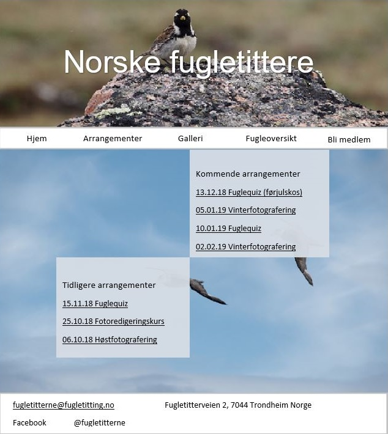
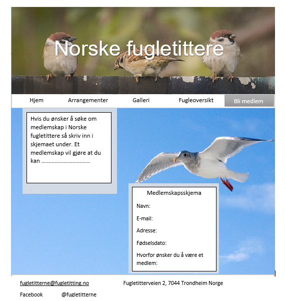

Norske Fugletittere
Mikal Norvoll, Aksel Saugestad, Morten Mikalsen, Fredrik P. Moren, Liv-Radi Lersveen
08.10.2018
Administrative detaljer
Vi har en falsk klient "Norske Fugletittere". Dette er en oppdiktet organisasjon med tilholdssted i Trondheim.
Purpose, goals, and audience: A summary paragraph to remind the reader about the purpose, goals, and audience of your website. Make it brief and succinct.
=======Målet med siden og dens målgruppe
Organisasjonen ønsker å bruke nettsiden til å dele informasjon om organisasjonen. De ønsker også å dele informasjon om ulike fuglearter i nærområdet, bilder tatt av medlemmer. Hjemmesiden skal informere om ulike arrangemet som organisasjonen holder for sine medlemmer.
Sidens struktur og utseende
Tekst på siden skal være svart (#000000). Topplinjen skal inneholde linker som navigerer til de ulike sidene. Teksten på topplinjen skal ha hvit bakgrunn (#FFFFFF). Når besøkende hviler musepekeren over de ulike linkene i topplinjen endres bakgrunnen til den aktuelle linken til grå (#ACA9A8), og teksten blir hvit(#FFFFFF). Bunnlinjen skal ha hvit (#FFFFFF) bakgrunn. Kantlinjen rundt topplinjen og bunnlinjen skal være grå (#C5CACA). Siden skal bruke Veranda som font og tekst skal være størrelse 11 og underoverskrifter skal være størrelse 12.
Bildet som er øverst på mock-upen skal være en video som spilles av automatisk og som spiller hele tiden mens den besøkende er inne på siden. Hvor det nå står "norske fugletittere" skal logoen til organisasjonen vises. Hver underside skal ha forskjellige videoer som spilles og forskjellige bakgrunnsbilder bak innholdet på siden. Dette designet viser tydelig hva slags type innhold besøkende kan forvente å finne på siden og tanken er at dette designet skal inspirere besøkende til å ville bidra med eget innhold til siden.

Innhold
This is the longest section of your document. For every page, you will need to give a text description of the content of the page as well as an image of the mockup of the page. The text describes what goal(s) this page fulfills, and how design decisions specific to it contribute into fulfilling such goals. The reason why you should describe the content is that you might not have yet received the actual content from the client and in your mockup of the page, you will be using fake text, fake images, etc. While the content can be fake, you should try to use meaningful headings and captions to convey its meaning. Finally,
Arrangementer
"Arrangementer" skal inneholde to elementer. Det ene elementet skal inneholde informasjon om kommende arrangementer. Det andre elementet skal inneholde informasjon om tidligere avholdte arrangementer. Hver av de nevnte arrangementene skal linke til en ny side som viser informasjon om det valgte arrangementet.
arrangement
"Arrangement" skal inneholde et element. Det ene elementet skal inneholde informasjon om det valgte arrangementet.

Fugleoversikt
"Fugleoversikt" skal fungere som ett mellomledd for å komme til informasjonssiden for fuglene. Siden skal bestå av flere hyperlenker som brukeren kan trykke på for å gå til fugl.html og få mer informasjon om den fuglen. Siden kommer til å vise denne inforamsjonen i en boks på siden. Denne boksen skal det være mulig å "scrolle" på for finne fram til fuglene. Boksen skal også inneholde en søkebar for å gjøre det mulig å søke etter fuglene. Det skal også finnes en annen boks på siden som viser de mest besøkte fulgene. Siden følger det generelle oppsette av nettstedet.

Medlemskap
"Medlemskap" er en side som har til hensikt å informere om hva det betyr å være en medlem av Norske fugletittere, og å kunne søke om medlemskap. Å søke om medlemskap skal fungere gjennom et skjema som skal være på siden, hvor brukeren skriver inn informasjon som navn E-mail, og mer. Når man trykker send på søknadskjemaet så vil det komme opp en varsel om at søknaden er sendt, men informasjonen vil ikke bli lagret.
Minimumskrav: JavaScript
Minimum Requirements: The website must include four distinct JavaScript applications (for example, rollovers effects on images or menus, user-defined functions, form validation, animations etc.). The four applications must all be different from each other. Clearly, indicate how each of you will be fulfilling these minimum requirements. Please note that each of these items must be constructed entirely by you and not copied from external websites on the Web (though you can modify the code from our class materials). Once you fulfill the minimum requirements with your own code, you are allowed to get the code from the web (with source attribution) to incorporate certain advanced components (e.g. image galleries with transitions), but they will not count as part of the minimum requirements.
sendMedlemskap.js
sendMedlemskap skal brukes for å gi en beskjed når brukeren har sendt inn søknadskjemaet på medlemskapsiden, hvor beskjeden skal erstatte skjemaet.
slideshow.js
dropdown.js
bildeForvisning.js
bildeForvisning funksjonen skal vise et forhåndsbilde av fuglen som linken fører til. Funksjonen kommer til å bli aktivert med onmouseover og deaktivert med onmouseout eventene. Linken sender this.innerHTML som variable. Funksjonen vil si vise en div til høyre for boksen med et img-tag. Funksjonen bruker variablet til funksjonen (navnet til fuglen) til å finne "fugl.jpg" og sette det som src.
Avansert Javascript
visFugl
visArrangement
filter
Skal hente inn teksten til et input-tag og sammenligne det med alle fuglene-linkene. Funksjonen skal bare vise de linkene som inneholder strengen fra inputen.
Fil struktur
- Index.html
- medlemskap.html
- galleri.html
- arrangementoversikt.html
- fugleoversikt.html
- arrangement.html
- fugl.html
- CSS/
- style.css
- videos/
- video.mp4
- video.ogg
- video.webm
- images/
- fav.png
- logo.png
- script/
- visFugl.js
- visArrangement.js
- sendMedlemskap.js
- filter.js
Fremgangsplan
Provide a clear, specific description of your plan for building the site. Outline the tasks to be accomplished, the deadlines for those tasks, and who is responsible for them. Include a list of files and folders, which will help each partner link to files her partner has built. Include a complete list of everything you need to get from your client (text, pictures, sound, etc.) and when you expect to get them. To the greatest extent you can, try to have all of these things by the time your design is done so that nothing will delay your coding.
| Oppgaver | Beskrivelse | Tidsfrist | Ansvarlig(e) Personer |
| index.html | framsiden/hjemmesiden | 21/10/2018 | Fredrik |
| medlemskap.html | Siden hvor besøkende kan søke om medlemskap | 21/10/2018 | Aksel |
| galleri.html | side hvor bilder som blir tatt av medlemmene publiseres | 21/10/2018 | Mikal |
| arrangementoversikt.html | siden som inneholder info om kommende og tidligere arrangementer | 21/10/2018 | Liv-Randi |
| fugleoversikt.html | side som linker til ulike sider med informasjon om forskjellige fugler | 21/10/2018 | Morten |
| arrangement.html | side som inneholder spesifikk informasjon om et arrangement | 21/10/2018 | Liv-Randi |
| fugl.html | Side som inneholder spesifikk informasjon om en fugl | 21/10/2018 | Mikal |
| arrangement.xml | XML-fil for å lagre informasjonen om arrangementene. | 21/10/2018 | Liv-Randi |
| fugl.xml | XML-fil for å lagre informasjonen om fuglene | 21/10/2018 | Mikal |
| style.css | CSS-fil med all stylingen | 21/10/2018 | Alle |
| fav.png | Et favicon til websiden | 07/10/2018 | Alle |
| logo.png | Logoen vil vises over toppbildet på alle sidene | 07/10/2018 | Alle |
| visFugl.js | Skal hente informasjon fra en .xml-fil og finne rett bilde for fugle | 28/10/2018 | Mikal |
| visArrangement.js | Skal hente informasjon fra en .xml-fil og finne rett bilde for arrangementet | 28/10/2018 | Mikal |
| sendMedlemskap.js | Sender "sende inn" medlemskapsdata og gi brukeren bekreftelse på innsending | 28/10/2018 | Aksel |
| filter.js | Et søkefelt hvor besøkende kan søke etter fugler i fugleoversikten | 28/10/2018 | Morten |
| slideshow.js | Skifter bilder i toppdelen av nettsidene. | 28/10/2018 | Fredrik |
| dropdown.js | En dropdown meny for mobilbrukere å komme seg mellom sidene. | 28/10/2018 | Liv-Randi |
| bildeForvisning.js | Viser en forhåndsvisning av fugelen når du holder over hyperlinken til den. | 28/10/2018 | Morten |
| Endelig sjekk | Dobbelsjekke hver fil for feil, sjekke javascript-en og css-en | 04/11/2018 | Alle |
| Brukertest | Gir ut nettsiden til testbrukere | 04/11/2018 | Alle |
| Rettelse | Retter på nettsiden basert på testbrukernes tilbakemelding | 09/11/2018 | Alle |